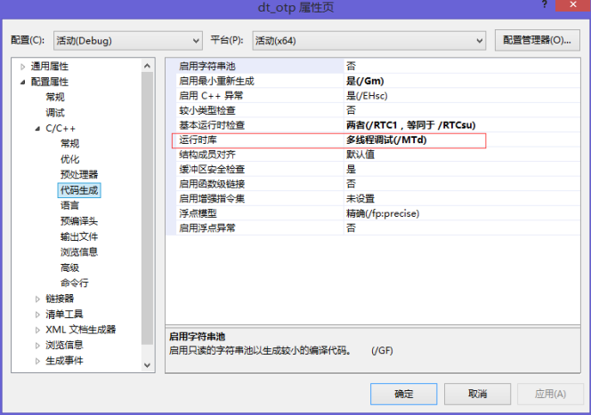

1. 前言
作为嵌入式开发的入门笔记，主要是为了记录我自己在过程中遇到的磕磕碰碰的问题以及解决方案，以便自己以后回顾，也希望大家少走弯路。
其实也是苦于网上均无完整资料，不才以备一份罢了。
不过此笔记换了一种叙述风格，除了记录了我在学习过程中的细节，有时还记录了当时的心理状态，可能显得相对啰嗦，不喜的同学可以直接跳过。
本文适合有扎实的 Java 和 C/C++ 功底，且会一定的 Linux 基础的同学阅读。当然如果是浸淫在嵌入式开发多年的同学，可以不再往下读了，当然我很乐意你能对我提出指正。
【注意】：
- 本文的内容会围绕我的一个小程序 OTP动态令牌 进行讲解。
- 它是一个 Java/C++ 的嵌入式程序，功能是提供 OTP（One-time Password）动态令牌 API。
- 其作用类似于 QQ、新浪之类的登陆盾牌：
- 生成时效令牌
- 校验时效令牌
- 其中 Java 项目名称为 dynamic-token，通过内部调用 C++ 动态链接库对外提供 API。
- 而 C++ 项目名称为 dt_otp，是一个动态链接库项目，负责令牌的生成与校验。
- 在本文的最后会提供其源码供大家下载参考。
2. 缩略词/名词解释
| 缩略语/名词 | 英文全称 | 说明 |
|---|---|---|
| GCC | GNU Compiler Collection | C/C++ 编译器 |
| JNI | Java Native Interface | Java 本地接口 |
| JNA | Java Native Access | Java 本地访问 |
| DLL | Dynamic Link Library | 动态链接库（win 平台） |
| SO | Shared Object | 共享对象（linux 平台的动态链接库） |
| ELF | Executable and Linkable Format | 可执行链接格式 |
3. 开发环境/测试环境
这里仅列出我做嵌入式开发/测试时用到的环境，不一定照搬。
还有就是，这里有一些工具其实是多余的，所以不必急着安装。
| 环境 | 版本 |
|---|---|
| 主机操作系统 | win8 x64 |
| 虚拟机操作系统 | Ubuntu x64 |
| Java 开发环境 | Eclipse Luna (4.4.1) |
| C/C++ 开发环境 | VC6.0（弃用） VCExpress（过渡） VS2008 或 VS2010（推荐） |
| Java 编译环境 | JDK 1.6 (x64/x86) |
| C/C++ 编译环境 | GCC 4.9.2 (x64/x86) |
| 交叉编译工具 | Cygwin x64（弃用） |
4. 开坑：提要
这并不是我第一次接触嵌入式开发。
最初使用到的是 [C/C++ - 汇编] 的嵌入式开发，我还记得是一个通过获取 CPU 时钟频率来运行闹钟。不过由于C和汇编都是比较底层的语言，且所开发的程序相对简单，当时也觉得“不过如此罢了”，就放下这段经历了。
这次重拾嵌入式开发，诱因是工作项目需求，要实现一个安全校验的功能，且要支持 win 和 Linux 系统。
由于该项目主要运行于 Java 平台，而出于安全性考虑，我立马就想到了 Java 易被反编译的缺陷。作为一个安全校验工具，其算法本身才是更重要的。我当机立断就想到了使用 C++ 作为算法的核心编程语言，提供API接口由Java调用（毕竟反汇编比反编译的复杂性要大得多）。
简而言之，安全校验通过 C 实现，而参数的传递、参数的有效性过滤等则由 Java 负责。
其实当时也是头脑发热。虽然我 Java 和 C++ 的功底都相对扎实，但联合编程的经验几乎为 0（只是几乎，真的）。不过人总是对依赖太久（其实是 YY 太久）的东西抱有不切实际的幻想，而当时让足矣支撑我 YY 的有两点：
- Java 必定已经考虑过 C 的嵌入式开发，绝对有提供相关的 API；
- 万事度娘都知道。
就是因为 YY 了这不切实际的两点，于是我给自己挖了一个大坑，足足填了两个星期…… 虽然过程中也是获益良多，但是为了避免自己重蹈覆辙，也为了大家少走弯路，最终决定写下这篇笔记。
废话说到这里，下面入正题吧。
5. 入坑：JNI
万事开头难，既然才入门，就问问度娘“如何在 Java 嵌入 C 编程”吧。
度娘果然很快就回复了： JNI 。
JNI（Java Native Interface），亦即 Java 本地接口，欲知其原理可查看这里。
其操作过程就是：
- 在 Java 代码用通过 [native] 关键字声明一个本地接口。
- 通过 [JNI 命令]，生成该接口对应 C/C++ 的头文件 [
*.h]。 - 编写 C/C++ 程序，实现该接口。
- 编译 C/C++ 程序为 [
*.dll] 动态链接库，由 Java 加载调用。
有了操作过程指导，可以开始实践了。
注：
- 读到这里时，建议先找个简单的 Hello World 实例感受一下 JNI
- 自己先实践一遍，如果有问题就带着问题，这样读到后面会更易理解
5.1. navicate 接口定义
新建一个 Java 项目，随便建一个类（本文以 exp.token.otp._OTP_CAPI.class 为例），然后声明一个 navicat 接口即可：
package exp.token.otp;
/**
* <PRE>
* OTP API(c++)
* </PRE>
* <br/><B>PROJECT : </B> dynamic-token
* <br/><B>SUPPORT : </B> <a href="https://exp-blog.com" target="_blank">exp-blog.com</a>
* @version 1.0 # 2015-07-08
* @author EXP: 272629724@qq.com
* @since jdk版本：jdk1.6
*/
public class _OTP_CAPI {
/**
* 获取默认私钥.
* @return 默认私钥(保密)
*/
protected static native String getDefaultPrivateKey();
/**
* 获取默认时间偏移量.
* @return 默认时间偏移量(60000ms)
*/
protected static native long getDefaultTimeOffset();
/**
* 获取动态令牌.
* @param privateKey 私钥
* @param timeOffset 时间偏移量(ms)
* @return 动态令牌
*/
protected static native String getOtpToken(
final String privateKey, final long timeOffset);
/**
* 校验动态令牌是否有效.
* @param otpToken 动态令牌
* @param privateKey 私钥
* @return true:有效; false:无效
*/
protected static native boolean isValid(
final String otpToken, final String privateKey);
}
5.2. 执行JNI命令生成C/C++的头文件
JNI 命令含义我就不详解了，大家可以自己去问度娘，样例如下：
javah -classpath . -jni exp.token.otp._OTP_CAPI这里有两个要点：
- 这是 [DOS命令] ，即该命令要求在 DOS 框内执行
- 该命令需要在 Java 的 [编译目录] 下执行
关于 Java 的 [编译目录] ，相信大部分人都是用 Eclipse :
- Eclipse的普通项目的编译目录是 [./bin]
- Eclipse的Maven项目的编译目录是 [./target/classes]
运行该命令后，就可以在编译目录下得到一个 [.h] 头文件：
exp_token_otp__OTP_CAPI.h看到这个头文件，接下来就可以转向我们熟悉的C/C++编程了。
5.3. 编写C/C++程序实现接口
围绕 [.h] 头文件，我们要做的就是编写实现的 [.cpp] 代码，再编译成 [.dll] 动态链接库供Java调用。
C/C++ 的编辑器比较多，我在学生时代最喜欢的就是 VC6.0，但到了如今，操作系统早已更新换代了，win7 开始对 VC6.0 的兼容性就非常差，在 win8 就属于装了也用不了的不稳定状态。而且 VC6.0 的库也相对过时了，当时我机器上除了 VC6.0，就剩下 VCExpress，也没多想就用了 VCExpress（至于后来为什么改为 VS2010，之后会提到）。
我想用C编写 [.exe] 工程的同学比编写 [.dll] 工程的同学多得多，这里简单介绍下如何用 VCExpress 新建 [.dll] 工程（VS2010 是相同的步骤，不用担心）。
新建项目时选择 [Win32 Project]：
再 Next 到最后，选择 [DLL] 即可：

至于 dll 项目结构我就不介绍了，还需要讲解的说明阁下的 C/C++ 功底不是做嵌入式的时候，先就此打住吧。
接下来把 JNI 生成的头文件 exp_token_otp__OTP_CAPI.h 放到 DLL 项目，include 并实现它即可：
至于怎么编写实现代码、怎么生成 [.dll] ，其流程和生成 [.exe] 是一样的，却别在于 [.dll] 是一个 [库程序] ，需要依赖 [宿主程序] 才能运行调试，与 [.exe] 可直接调试相比是麻烦得多了。
我当时是先在 [.exe] 项目调试完程序后，再把代码迁移到 [.dll] 中编译，纵然有点繁琐，也只是最后多了一步而已。
VS 自身有提供把 DLL 程序附加到宿主进程调试的方法，有兴趣的同学可以问度娘
在这里还有一个细节问题需要注意的，在编译时，可能会出现类似异常：
1>Compiling…
1>stdafx.cpp
1>d:\workspace\vc\dt_otp\dt_otp\exp_token_otp__OTP_CAPI.h(2) : fatal error C1083: 无法打开包括文件:"jni.h": No such file or directory
1>Build log was saved at "file://d:\workspace\vc\dt_otp\dt_otp\Debug\BuildLog.htm"
1>dll_project - 1 error(s), 0 warning(s)
========== Rebuild All: 0 succeeded, 1 failed, 0 skipped ==========
从异常可知，问题出现在 exp_token_otp__OTP_CAPI.h 头文件的第2行，先看一下第 2 行是什么：
/* DO NOT EDIT THIS FILE - it is machine generated */
#include <jni.h>这里涉及到 C/C++ 的 include 机制：include 的文件用尖括号包围，表示从库目录开始找该文件；用双引号包围，表示从当前目录开始找该文件。
[jni.h] 明显是 Java 的 JNI 功能的头文件，找不到可能是环境变量问题导致在库目录找不到，但与其排查环境变量的问题，还不如直接绕过去，将其直接复制到 DLL 项目的当前目录（与头文件 exp_token_otp__OTP_CAPI.h 同一个目录）就可以了。
*在后面跨平台调用时会再次改动此文件，复制过来可便于操作。
首先如下修改 exp_token_otp__OTP_CAPI.h 头文件的第2行，即使其查找当前目录的 [jni.h]：
#include "jni.h"然后在JDK目录 [%jdk_home%/include] 找到 [jni.h] 文件，复制过来即可。
重新编译，出现新的异常：
1>Compiling…
1>stdafx.cpp
1>d:\workspace\vc\dt_otp\dt_otp\jni.h(27) : fatal error C1083: 无法打开包括文件:"jni_md.h": No such file or directory
1>Build log was saved at "file://d:\workspace\VC\Other\dll_project\dll_project\Debug\BuildLog.htm"
1>dll_project - 1 error(s), 0 warning(s)
========== Rebuild All: 0 succeeded, 1 failed, 0 skipped ==========
这次问题源于 [jni.h] 第27行所引用的文件丢失：
/* jni_md.h contains the machine-dependent typedefs for jbyte, jint and jlong */
#include "jni_md.h"同样，在JDK目录 [%jdk_home%/include/win32] 找到 [jni_md.h] 文件，复制过来，重新编译，编译成功。
这里先留一个待处理问题，其实 [jni_md.h] 还存在一个跨平台问题。后面会提到问题原因，并如何解决，这里先略过
5.4. Java 加载 DLL 动态链接库
由 VCExpress 编译成功的 [.dll] 文件可在 C++ 项目的 [./Debug] 文件下找到。将其复制到 Java 项目的 [./lib] 目录下（其实任意位置都可以，此处为了举例）。
假如所编译的 [.dll] 文件名为 [dt_otp.dll]，那么在 Java 有两种加载方式：
System.loadLibrary("./lib/dt_otp");
System.load("D:/java/dynamic-token/lib/dt_otp.dll");任意选用一种即可，其中：
- [System.loadLibrary] 指定的是相对路径下的 dll 库名，不能带后缀
- [System.load] 指定的是绝对路径下的 dll 库文件，必须带后缀
建议用 [System.loadLibrary] ，其之所以不能带后缀，是为了跨平台兼容，后面会提及
5.5. 为什么不用 JNA ?
这不是本文的重点，本文也没采用过 JNA 技术，觉得本文信息量太大，可先跳过这节。
JNA（Java Native Access）Java 本地访问（传送门），是基于 JNI 再封装一层的技术。我只看过 Demo，没真正用过，所以不莽下评论。
JNA 相较于 JNI，简化了 Java To C 的嵌入过程（也仅仅是简化 JNI 命令、数据类型转换 等步骤，C 代码该写还得写）。但缺点是只支持 Java To C 的单向调用，不支持 C To Java 的调用。
至于为什么我没采用 JNA，主要是两个原因：
- 当时我还不知道这个东西
- 知道也会选 JNI，学习是就应先学底层原理，再学怎么偷懒
不过既然提到 Java To C 的 数据类型转换，这里稍微扩充一下：
刚才在通过 C 实现 JNI 生成的 [.h] 头文件的时候，想必都看到过 jstring、jlong 等等之类的数据类型，这些数据类型其实都在 [jni.h] 头文件中被声明了，需要转换到 C/C++ 的数据类型才能使用。具体怎么转换我就不贴代码了，这不是本文的重点，知道有这回事就可以了。度娘可以找到很多大神的分享，我就贴几个我参考过的传送门：
| 文献 | 来源 |
|---|---|
| JNI中java类型与C/C++类型对应关系 | 传送 |
| Java基础知识——JNI入门介绍 | 传送 |
| JNI的某些数组和字符串类型转换（转） | 传送 |
| JNI高级教程之数据类型转换 | 传送 |
【注意】：
- 数据类型转换要注意的点很多，例如数据截断、内存释放（C不像Java会自动回收）等
- 比较隐含的还有不同运行平台的数据位长不同，导致运行结果不一致，等等后面均会提及
6. 挖坑：跨平台编程
嵌入式编程，需要直面的问题就是 [跨平台] 的问题。
经常用 Java 的同学可能已经被洗脑了，因为 Java 属于 [平台无关] 语言，所以在编程、编译时基本不会考虑任何平台特性。但是如果在嵌入了 C/C++ 还不考虑平台特性，你面临的只有进退无路的尴尬境地。
只有做过跨平台编程的同学才会真正了解，[跨平台] 究竟意味着什么：
- Java 是 [跨平台语言]，但同时也是 [平台无关语言] ，所以它 [一次编译，到处运行]。
- C/C++ 是 [跨平台语言]，但它是 [平台相关语言] ，所以它是 [一次编码，到处编译]。
读到本文后面，你会对这两句话有深刻了解。
在上一节经已讲述了从 Java 生成 C/C++ 接口、到 C/C++ 实现接口、再编译成可被 Java 加载的 DLL 库文件的过程。
本节主要讲述 Java 内嵌 C/C++ 后，跨平台调用若不考虑平台特性会发生的问题，以及如何解决。
6.1. DLL动态链接库的加载与调用
按照前面所述的步骤，我用 Java 的 [System.loadLibrary] 加载 [dt_otp.dll] 文件所遭遇的第一个问题，就是无法加载，异常如下：
java.lang.UnsatisfiedLinkError: ./lib/dt_otp.dll: Can’t load IA 32-bit .dll on a AMD 64-bit platform
at java.lang.ClassLoader$NativeLibrary.load(Native Method)
at java.lang.ClassLoader.loadLibrary0(ClassLoader.java:1807)
at java.lang.ClassLoader.loadLibrary(ClassLoader.java:1703)
at java.lang.Runtime.load0(Runtime.java:770)
at java.lang.System.load(System.java:1003)
异常信息很明显了：【无法在 64 位平台加载 32 位 dll 文件】。
当然你遇到的可能是相反的问题， 【无法在 32 位平台加载 64 位 dll 文件】，但问题根源是一样的：
java.lang.UnsatisfiedLinkError: ./lib/dt_otp.dll: Can’t load AMD 64-bit .dll on a IA 32-bit platform
at java.lang.ClassLoader$NativeLibrary.load(Native Method)
at java.lang.ClassLoader.loadLibrary0(ClassLoader.java:1807)
at java.lang.ClassLoader.loadLibrary(ClassLoader.java:1703)
at java.lang.Runtime.load0(Runtime.java:770)
at java.lang.System.load(System.java:1003)
我马上就想到应该是JDK在作怪了。我是 win8_x64 的系统，默认使用 JDK 是 1.6_x64，但异常信息告诉我，我所生成的 dll 是 32 位……（至于为什么是 32 位？下面马上会解谜）。
先不管这个，于是我切换到 JDK1.6_x86，重新运行 Java 程序，果然运行成功。但这个程序的初衷就是放之四海皆可跑的定位，天知道运行它的机器是 32 位还是 64 位，这种过份的使用限制条件是不可能被接受的。
既然 [.dll] 文件是 32 位的，那是否存在 64 位平台向下兼容运行的方法？于是我带着这个天真的想法搜了度娘的身，但似乎所有的结果都指向一个答案“不存在”（如果有同学知道兼容的方法，请速度联系我）。
64 位平台无法兼容 32 位 dll 的问题足足困扰了我两天，各种失败的尝试终究使我不得不放弃。于是我开始寻求另一个切入点：
同时编译 32 和 64 位版本的 dll，由 Java 判定操作系统位数后再加载
以后的事实证明，我这个想法是正确的，但这也是我挖坑的开始。。。
【注意】：
- N-bit 平台只支持 N-bit 库，别人口里所谓的 [兼容] 都是因为他有多个库文件
- 在 64 位的 windows 系统中，除了自身的 C:\Windows\SysWOW64 之外，还要保留以前 32 位系统的 C:\Windows\System32，以兼容 32 位程序的运行，就很好地证明了这个道理
6.2. DLL 的编译（x86 与 64）
既然确定了目标是生成 32-bit 和 64-bit 两个版本的 dll，马上就着手编译。
但首先困扰我并不得不先解决的是，为什么我是 64 位的系统，编译出来的是 32 位 dll？
这其实是一个误区，64 位操作系统不是编译 64 位程序的必要条件，只需有 64 位编译器即可，这也是 [交叉编译工具] 之所以存在的理由。当然这是后话
度娘说是 GCC 编译器的问题，VCExpress 可以在 [Build] -> [Configuration Manager] 菜单中查看当前所用的编译器位数，我查了一下，果然是 32 位：
但当我想切换到 64 位编译环境时，发现 VCExpress 只包含 32 位编译器。而且最杯具的是 VCExpress 不允许安装 64 位编译器（各种的找插件、重新安装 VCExpress 等等又浪费了我大半天）。
最后我不得不寻求 VS2010 的帮助（这也是我切换到 VS2010 的理由），因为它能同时编译出 32 和 64 位的 DLL 文件（事实上更新版本的 VS 也具备此功能，只是我个人不习惯太新的 C/C++ 库而已）。值得安慰的是 VS2010 可以直接导入 VCExpress 的项目，省了不少功夫。
至于如何安装 VS2010 可参考这篇文章，这里主要记得在安装时选择 [64 位编译工具]：
然后在编译时切换到 x64 平台（若没有选项则直接 [新建] 一个即可），就可以编译出 64 位的 dll 了：
发现 VS2010 所编译的 32 位 dll 在 C++ 项目 [./Debug/] 目录下，编译的 64 位 dll 在 C 项目 [./x64/Debug/] 目录下。分别用 JDK1.6_x86 和 JDK1.6_x64 加载，成功！
如果有安装 Cygwin 且部署好了 win 版 x86 和 x64 的 [交叉编译工具链]，就可以直接通过 g++ 命令编译出 32 和 64 位的dll。但[交叉编译工具链]的安装过于繁琐，且在 Cygwin 上编写 C 也不方便，图省事的同学还是像我一样直接用 VS2010 吧。
6.3. 乱入的 ELF 头
到目前为止，程序已经可以在 win 平台下运行成功了。以为大功告成的我，直接就把程序放到 Linux 平台上试水，毕竟双系统支持才是最终目标。
其实当时也是有点小弱鸡，一如既往地被 Java 洗脑了。我虽知道这是一个嵌入了 C/C++ 的 Java 程序，但是脑子了净想着 Java 的好处：“既然 dll 库是 Java 负责加载的，那么 Java 肯定已经屏蔽了 dll 的平台差异性，只要 win 下可以跑，那只要有 JVM，这程序放到哪里都能跑了。”
于是 Linux 当着 Java 的面给了我响亮的一巴掌清醒清醒：尼 mǎ 这是 [dll] !。
好吧，科普君又来了：：
- DLL（ Dynamic Link Library ）亦即动态链接库，就是在程序运行过程中才加载进来的
- 如果 Java 是在编译时将其一同静态编译进代码的，理论上是能够直接在 Linux 上运行的
- 但这是 DLL，强如 Java 也只能在运行时加载
- 而当我们在 Linux 平台上跑 Java 时，Linux 不能识别 win 的 DLL，Java 也就不能动态加载
多说无益，先看看我在 Linux 上直接加载 dll 出现的问题：
java.lang.UnsatisfiedLinkError: ./lib/dt_otp_x64.dll : invalid ELF header (Possible cause: endianness mismatch)
at java.lang.ClassLoader$NativeLibrary.load(Native Method)
at java.lang.ClassLoader.loadLibrary0(ClassLoader.java:1807)
at java.lang.ClassLoader.loadLibrary(ClassLoader.java:1703)
at java.lang.Runtime.load0(Runtime.java:770)
at java.lang.System.load(System.java:1003)
无效 ELF 头？ELF 头是什么？
度娘说 ELF（Executable and Linkable Format）即可执行连接格式，是 Unix 为应用程序的二进制接口发布的（这里有简介）。其实简单来说，ELF 就是 Linux 中文件对自身的自述声明，Linux 下可通过 file 命令可以查看其信息：
$ file dt_otp_x86.dll
dt_otp_x86.dll:PE32 executable (DLL) (GUI) Intel 80386, for MS Windows
$ file dt_otp_x64.dll
dt_otp_x64.dll:PE32+ executable (DLL) (GUI) x86-64, for MS Windows果不其然，我在 VS2010 编译的两份 dll 文件均是 [for MS Windows]，且分别声明了属于 x86-bit 还是 x64-bit。
6.4. SO 也是动态连接库
但知道了 ELF 头的存在，也只是知道了 Java 在 Linux 加载 DLL 会报错的原因，未能切实解决问题。
按照我既往的思维逻辑，我又去抱度娘大腿了：“告诉我怎么在 Linux 加载 DLL 的方法吧….”。这次连度娘都无语了。最后还是那些令我惊呆了的小伙伴给了我一个切入点：
dll 是 win 平台的动态链接库，so 是 Linux 平台的动态链接库
这回真是 “soですね （原来如此）”了。
so（Shared Object）亦即共享对象（科普可参看这里、这里或这里），等价于 win 平台的动态链接库。既然如此，又有了 win 的经验，要解决这个问题的方法就找到了：
再编译 Linux 平台的 32-bit 和 64-bit 版本的 so 动态链接库
我不敢说这是最好的、唯一的解决方法，但这是我当时能想到的解决方案。
读到这里的同学大概也开始了解我一开始在前面所说的两句话是什么意思了：
- Java 是 [跨平台语言]，但同时也是 [平台无关语言] ，所以它 [一次编译，到处运行]。
- C/C++ 是 [跨平台语言]，但它是 [平台相关语言] ，所以它是 [一次编码，到处编译]。
6.5.编译 SO 动态链接库（x64）
这部分对于有过 Linux 开发经验的同学就相对熟悉了，在 C/C++ 源码目录下，执行这条 GCC 命令就可以编译 [.o] 目标文件：
$ g++ -c *.cpp这里插句话，我当时的 Linux 编译环境是 Ubuntu14_x64, GCC 4.9.2。
于是我把 VS2010 的 dll 项目工程上传到Linux机器，在项目的源码目录内执行前面的 g++ 命令，结果一堆莫名的报错，但其中关键的有几处重复报错：
jni_md.h:17:31: error: expected constructor, destructor, or type conversion before
#define JNIIMPORT __declspec(dllimport)
jni_md.h:16:31: error: expected constructor, destructor, or type conversion before
#define JNIEXPORT __declspec(dllexport)
jni.h:1926:1: note: in expansion of macro JNIEXPORT
JNIEXPORT jint JNICALL
从异常信息中挖掘关键字，隐约可以知道是 [jni.h] 这个文件的一些宏定义错误，而这些宏定义源于 [jni_md.h] 文件。
打开 [jni_md.h] 文件，确实发现有 3 个相同的宏定义代码：
#define JNIEXPORT __declspec(dllexport)
#define JNIIMPORT __declspec(dllimport)
#define JNICALL __stdcall同时打开 [jni.h] ，发现有多处用到了这些宏定义：
jobject (JNICALL *NewGlobalRef) (JNIEnv *env, jobject lobj);
void (JNICALL *DeleteGlobalRef) (JNIEnv *env, jobject gref);其实当时我看到 [dllexport] 和 [dllimport] 就知道有猫腻了，[dll] 不就是 win 的东西吗？ Linux 肯定不支持啊，但这个问题我想了很久也不得其解：“这是 JNI 提供的头文件，按道理不可能会出这种明知故犯的缺陷。况且如果 [dllexport] 和 [dllimport] 有问题，我该怎么改呢？”
当机立断找度娘给自己科普了一下，原来 __declspec(dllexport) 是用于声明哪些函数可以导出（即对外使用），但仅限于 win 平台（科普看这里）；而相对地，Linux 则默认所有函数都是 public 的，即可以导出而无需声明，不过 Linux 有一个相似的声明 __attribute__((visibility("hidden"))) 可以隐藏函数使其不能导出（科普看这里）。
但科普了这些其实也是 然并卵，怎么改还是毫无头绪。而且当时我心里还有一份执念就是：“尽然因为平台的特性问题，C/C++ 程序我至少要编译 4 个版本（win 两个、Linux 两个），但代码必须只能有一份。”
后来我才灵机一动， [jni.h] 和 [jni_md.h] 都是我在 win 的 JDK 下面复制的，会不会 Linux 有不同的版本？！
果不其然！
先看看 win 和 Linux 这两个文件的位置比较：
| 平台 | 文件 | 位置 |
|---|---|---|
| win | jni.h | %jdk_home%/include |
| win | jni_md.h | %jdk_home%/include/win32 |
| Linux | jni.h | %jdk_home%/include |
| Linux | jni_md.h | %jdk_home%/include/linux |
再对比文件内容， [jni.h] 是相同的，但是Linux版本下 [jni_md.h] 的这三个宏定义变成了这样：
#define JNIEXPORT
#define JNIIMPORT
#define JNICALL那么为了同时兼顾 win 和 Linux，可以直接修改 [jni_md.h] ，添加开关宏：
#ifdef _WIN32
#define JNIEXPORT __declspec(dllexport)
#define JNIIMPORT __declspec(dllimport)
#define JNICALL __stdcall
#else
#define JNIEXPORT
#define JNIIMPORT
#define JNICALL
#endif重新执行 g++ 命令编译，虽然还是报错，但是宏错误的问题已经消失：
stdafx.h:13:85: fatal error: windows.h: No such file or directory
#include <windows.h>
其实有了前面的经验，这个问题也变得很好解决了。VS2010 在创建非空的 dll 工程的时候，会自动生成 [stdafx.h] 头文件，并把 <windows.h> 包含进来，修改 [stdafx.h] ，同样地添加开关宏即可：
#ifdef _WIN32
#include <windows.h>
#endif【注意】：
- 实际上
#include <windows.h>的问题远没有这么简单就解决了 - 当时我的程序没有考虑到 Linux 环境的问题，不少地方引用了 win 的 API，所以要一个个位置排查并修改为与 WinAPI 无关的代码，着实费了不少时间
重新执行 g++ 命令编译，又报了新的错误，而且是项目的 dllmain 函数报错：
dllmain.cpp:13:2: error: BOOL does not name a type
BOOL APIENTRY DllMain(HMODULE hModule, DWORD ul_reason_for_call, LPVOID lpReserved)
这个错误是因为我刚才在 Linux 下屏蔽了 [#include <windows.h>] 引起的。实际上 Linux 编译的 so 文件无需用到 dll 的 main 函数，修改 [dllmain.cpp] （这个文件同样是 VS2010 在创建非空的 dll 工程时自动生成的），同样地为其添加开关宏即可：
#ifdef _WIN32
#include "stdafx.h"
BOOL APIENTRY DllMain
(HMODULE hModule, DWORD ul_reason_for_call, LPVOID lpReserved)
{
switch (ul_reason_for_call)
{
case DLL_PROCESS_ATTACH:
case DLL_THREAD_ATTACH:
case DLL_THREAD_DETACH:
case DLL_PROCESS_DETACH:
break;
}
return TRUE;
}
#endif【注意】：
- dllmain.cpp 的问题有更好的方法去处理，就是编写 makefile 脚本
- 只要在构建时不将其添加进来，自然就不会编译它了
- 其他不需被 Linux 编译的、或仅用于测试的 cpp 文件，也可以通过此方式过滤
重新执行 g++ 命令编译，这次终于没有报错了，而且每份 [*.cpp] 源码都多了一份对应的 [*.o] 目标文件，如下图所示。至此编译 so 动态链接库的第一步完成。

最后执行以下命令生成 so 动态链接库：
$ g++ -shared -o dt_otp.so *.o但是 Linux 还是很不友善地报错了：
/usr/bin/ld: dt_otp.o: relocation R_X86_64_32 against '__gxx_personality_v0' can not be used when making a shared object; recompile with -fPIC
dt_otp.o: error adding symbols: Bad value
collect2: error: ld returned 1 exit status
这个异常还是比较易懂的，就是说无法构造一个 [.so] 文件，请用 [-fPIC] 参数重新编译。度娘说 [-fPIC] 的作用是为了构造 [位置无关] 的程序，我想想也合理，毕竟是动态链接库。
加入 [-fPIC] 参数重新执行编译和构建命令，成功创建 [.so] 文件：
$ g++ -fPIC -c *.cpp
$ g++ -fPIC -shared -o dt_otp.so *.o马上使用 file 命令查看其 ELF 头信息：
$ file dt_otp.dll
dt_otp.so: ELF 64-bit LSB shared object, x86-64, version 1 (SYSV), dynamically linked, BuildID[sha1]=8aa563514fb87d53815814d00f3387e1dca18a7e, not stripped看到这段 ELF 头信息，我内心是窃喜的 ~ 因为不再是 [for MS Windows] 了。
马上让 Java 程序引用该 so 动态链接库（引用方式与dll相同），成功！
6.6. 编译 SO 动态链接库（x86）
但问题又来了，还差一份 32-bit 的 so 库文件，我在 64 位的 Linux 应该如何编译出来呢？
度娘说 GCC 所编译的文件位数默认与 GCC 编译器的位数相同，查了一下本地 GCC 版本信息，果然是 64-bit 的：
$ g++ -v
COLLECT_GCC=g++
COLLECT_LTO_WRAPPER=/usr/lib/gcc/x86_64-linux-gnu/4.9/lto-wrapper
Target: x86_64-linux-gnu
...
gcc version 4.9.2 (Ubuntu 4.9.2-10ubuntu13)度娘还说，要想控制所编译的文件的位数，只需在 g++ 命令中加入声明参数 [-m32] 或 [-m64] 即可。
但是我添加 [-m32] 参数后，编译又报错了：
$ g++ -m32 -fPIC -c *.cpp
/usr/include/features.h:364:25: fatal error: sys/cdefs.h: No such file or directory
#include <sys/cdefs.h>
/usr/include/c++/4.9/exception:37:28: fatal error: bits/c++config.h: No such file or directory
#include <bits/c++config.h>其实这个错误还是比较好解决的，原因是我的 64 位 Ubuntu 只有 64 位 GCC 编译环境，没有 32 位的 GCC 编译环境（其实和最开始我在 win 的 VCExpress 中遇到没有 64 位编译器的道理是一样的）。那么安装一个 32 位的 GCC 编译器就 OK 了，而 Ubuntu 的好处就是只需两条命令就可完成安装：
$ sudo apt-get install lib32readline-gplv2-dev
$ sudo apt-get install gcc-multilib g++-multilib其中，第一条命令是安装 32 位的兼容库，第二条命令是安装 32 位 GCC 编译器。其他 Linux 系统的同学请自己去问度娘怎么安装（这里是Ubuntu的安装方法）。
编译 32-bit 的 [*.o] 目标文件成功后，则可用以下创建 [so] 文件：
$ g++ -m32 -fPIC -shared -o dt_otp_x86.so *.o再来看看其 ELF 头信息：
$ file dt_otp_x86.dll
dt_otp_x86.so: ELF 32-bit LSB shared object, Intel 80386, version 1 (SYSV), dynamically linked, BuildID[sha1]=7343d60222fded19f18cbdaa0d24d0d0949bd4cd, not stripped马上让 Java 程序引用该 so 动态链接库（注意要用 32 位 JDK），成功！
6.7. SO 的编译小结（x86 与 x64）
由于关于 SO 的内容比较多，这里小结一下。
生成 64-bit 的 [so] 动态连接库文件的命令是：
$ g++ -m64 -fPIC -c *.cpp
$ g++ -m64 -fPIC -shared -o [so库名].so *.o生成 32-bit 的 [so] 动态连接库文件的命令是：
$ g++ -m32 -fPIC -c *.cpp
$ g++ -m32 -fPIC -shared -o [so库名].so *.o有其他前辈已经归纳得比较详尽了，有兴趣的同学也不妨跳过去看看。
6.8. make 构建更优雅
前面介绍了如何把 [*.cpp] 生成 [so] 的过程，但是比较无脑，把所有 cpp 一股脑全部编译进去了，其实不必要，而且项目太大的话还浪费编译时间。
为了使得编译过程显得更优雅，完全可以编写一份 makefile 脚本，然后通过 make 命令构建（不懂 make 的同学点这里或者问度娘）。
下面为我最终为编写的 makefile 脚本（本文最后会提供下载），脚本一共三份： make.sh、makefile_x64、makefile_x86：
#!/bin/bash
# == make.sh ==
export lib_x64=dt_otp_x64.so
export mf_x64=makefile_x64
export lib_x86=dt_otp_x86.so
export mf_x86=makefile_x86
echo "======================================="
echo "make ${lib_x64} start: "
make --file=${mf_x64} all
make --file=${mf_x64} clean
echo "make ${lib_x64} end. "
file ${lib_x64}
echo "======================================="
echo "."
echo "======================================="
echo "make ${lib_x86} start: "
make --file=${mf_x86} all
make --file=${mf_x86} clean
echo "make ${lib_x86} end. "
file ${lib_x86}
echo "======================================="# == makefile for : dt_otp_x64.so ==
# -------
# Variable declaration :
# -------
TAR_LIB_NAME := dt_otp_x64.so
O_MAIN_OBJS := dllmain.o dt_otp.o otp_impl.o
O_ALGORITHM_OBJS := md5.o digital_watermark.o
O_UTIL_OBJS := crypto_utils.o jni_utils.o str_utils.o num_utils.o time_utils.o
O_ALL_OBJS := $(O_MAIN_OBJS) $(O_ALGORITHM_OBJS) $(O_UTIL_OBJS)
COMPILE_CMD := g++ -m64 -fPIC
# -------
# Build libary :
# -------
all : $(TAR_LIB_NAME)
$(TAR_LIB_NAME) : $(O_ALL_OBJS)
@$(COMPILE_CMD) -shared -o $(TAR_LIB_NAME) $(O_ALL_OBJS)
@echo "> Build [$(TAR_LIB_NAME)] finish."
dllmain.o : dllmain.cpp stdafx.h targetver.h
@$(COMPILE_CMD) -c dllmain.cpp -o dllmain.o
@echo "> Compile [dllmain.o] finish."
dt_otp.o : dt_otp.cpp dt_otp.h otp_impl.h jni_utils.h exp_token_otp__OTP_CAPI.h jni.h jni_md.h stdafx.h targetver.h
@$(COMPILE_CMD) -c dt_otp.cpp -o dt_otp.o
@echo "> Compile [dt_otp.o] finish."
otp_impl.o : otp_impl.cpp otp_impl.h num_utils.h str_utils.h time_utils.h crypto_utils.h stdafx.h targetver.h
@$(COMPILE_CMD) -c otp_impl.cpp -o otp_impl.o
@echo "> Compile [otp_impl.o] finish."
md5.o : md5.cpp md5.h stdafx.h targetver.h
@$(COMPILE_CMD) -c md5.cpp -o md5.o
@echo "> Compile [md5.o] finish."
digital_watermark.o : digital_watermark.cpp digital_watermark.h str_utils.h stdafx.h targetver.h
@$(COMPILE_CMD) -c digital_watermark.cpp -o digital_watermark.o
@echo "> Compile [digital_watermark.o] finish."
crypto_utils.o : crypto_utils.cpp crypto_utils.h str_utils.h md5.h digital_watermark.h stdafx.h targetver.h
@$(COMPILE_CMD) -c crypto_utils.cpp -o crypto_utils.o
@echo "> Compile [crypto_utils.o] finish."
jni_utils.o : jni_utils.cpp jni_utils.h str_utils.h stdafx.h targetver.h
@$(COMPILE_CMD) -c jni_utils.cpp -o jni_utils.o
@echo "> Compile [jni_utils.o] finish."
num_utils.o : num_utils.cpp num_utils.h str_utils.h stdafx.h targetver.h
@$(COMPILE_CMD) -c num_utils.cpp -o num_utils.o
@echo "> Compile [num_utils.o] finish."
str_utils.o : str_utils.cpp str_utils.h stdafx.h targetver.h
@$(COMPILE_CMD) -c str_utils.cpp -o str_utils.o
@echo "> Compile [str_utils.o] finish."
time_utils.o : time_utils.cpp time_utils.h stdafx.h targetver.h
@$(COMPILE_CMD) -c time_utils.cpp -o time_utils.o
@echo "> Compile [time_utils.o] finish."
clean:
@rm -f $(O_ALL_OBJS)
@echo "> Clean [*.o] finish." # == makefile for : dt_otp_x86.so ==
# -------
# Variable declaration :
# -------
TAR_LIB_NAME := dt_otp_x86.so
O_MAIN_OBJS := dllmain.o dt_otp.o otp_impl.o
O_ALGORITHM_OBJS := md5.o digital_watermark.o
O_UTIL_OBJS := crypto_utils.o jni_utils.o str_utils.o num_utils.o time_utils.o
O_ALL_OBJS := $(O_MAIN_OBJS) $(O_ALGORITHM_OBJS) $(O_UTIL_OBJS)
COMPILE_CMD := g++ -m32 -fPIC
# -------
# Build libary :
# -------
all : $(TAR_LIB_NAME)
$(TAR_LIB_NAME) : $(O_ALL_OBJS)
@$(COMPILE_CMD) -shared -o $(TAR_LIB_NAME) $(O_ALL_OBJS)
@echo "> Build [$(TAR_LIB_NAME)] finish."
dllmain.o : dllmain.cpp stdafx.h targetver.h
@$(COMPILE_CMD) -c dllmain.cpp -o dllmain.o
@echo "> Compile [dllmain.o] finish."
dt_otp.o : dt_otp.cpp dt_otp.h otp_impl.h jni_utils.h exp_token_otp__OTP_CAPI.h jni.h jni_md.h stdafx.h targetver.h
@$(COMPILE_CMD) -c dt_otp.cpp -o dt_otp.o
@echo "> Compile [dt_otp.o] finish."
otp_impl.o : otp_impl.cpp otp_impl.h num_utils.h str_utils.h time_utils.h crypto_utils.h stdafx.h targetver.h
@$(COMPILE_CMD) -c otp_impl.cpp -o otp_impl.o
@echo "> Compile [otp_impl.o] finish."
md5.o : md5.cpp md5.h stdafx.h targetver.h
@$(COMPILE_CMD) -c md5.cpp -o md5.o
@echo "> Compile [md5.o] finish."
digital_watermark.o : digital_watermark.cpp digital_watermark.h str_utils.h stdafx.h targetver.h
@$(COMPILE_CMD) -c digital_watermark.cpp -o digital_watermark.o
@echo "> Compile [digital_watermark.o] finish."
crypto_utils.o : crypto_utils.cpp crypto_utils.h str_utils.h md5.h digital_watermark.h stdafx.h targetver.h
@$(COMPILE_CMD) -c crypto_utils.cpp -o crypto_utils.o
@echo "> Compile [crypto_utils.o] finish."
jni_utils.o : jni_utils.cpp jni_utils.h str_utils.h stdafx.h targetver.h
@$(COMPILE_CMD) -c jni_utils.cpp -o jni_utils.o
@echo "> Compile [jni_utils.o] finish."
num_utils.o : num_utils.cpp num_utils.h str_utils.h stdafx.h targetver.h
@$(COMPILE_CMD) -c num_utils.cpp -o num_utils.o
@echo "> Compile [num_utils.o] finish."
str_utils.o : str_utils.cpp str_utils.h stdafx.h targetver.h
@$(COMPILE_CMD) -c str_utils.cpp -o str_utils.o
@echo "> Compile [str_utils.o] finish."
time_utils.o : time_utils.cpp time_utils.h stdafx.h targetver.h
@$(COMPILE_CMD) -c time_utils.cpp -o time_utils.o
@echo "> Compile [time_utils.o] finish."
clean:
@rm -f $(O_ALL_OBJS)
@echo "> Clean [*.o] finish." 其中 make.sh 会自动调用 makefile_x64 和 makefile_x86，这样只需要执行一次 make.sh 就可以同时得到 64-bit 和 32-bit 的 [so] 动态连接库文件：
【注意】：
- 其实 [dll] 同样可以模仿 [so] ，通过make命令进行构建
- 前面我一直提到一个 Cygwin 工具，其实它是 win 下的轻量级 Linux 模拟器
- 只要在上面部署好 win 和 Linux 的 [交叉编译工具链]，就可以实现一键构建 [dll] 和 [so]
7. 填坑：跨平台调试
截至为此，我已经拥有了 [win_x86.dll]、[win_x64.dll]、[linux_86.so]、[linux_x64.so] 两个平台两种位长的四份动态链接库。
理论上 Java 程序只需根据运行环境加载对应的库文件就可以了。
但实际上总不会这么顺利的。
7.1. 程序无法运行在其他 win 平台
我把程序打包后，本地测试可以运行。然后部署到其他 windows 机器，却发现运行报错：
java.lang.UnsatisfiedLinkError: ./lib/dt_opt.dll: 应用程序无法启动，因为应用程序的并行配置不正确。有关详细信息，请参阅应用程序事件日志，或使用命令行 sxstrace.exe 工具。
at java.lang.ClassLoader$NativeLibrary.load(Native Method)
at java.lang.ClassLoader.loadLibrary0(ClassLoader.java:1803)
at java.lang.ClassLoader.loadLibrary(ClassLoader.java:1699)
at java.lang.Runtime.load0(Runtime.java:770)
at java.lang.System.load(System.java:1003)
java.lang.UnsatisfiedLinkError: ./lib/dt_opt.dll: 由于应用程序配置不正确，应用程序未能启动。有关详细信息，请参阅应用程序事件日志，或使用命令行 sxstrace.exe 工具。
at java.lang.ClassLoader$NativeLibrary.load(Native Method)
at java.lang.ClassLoader.loadLibrary0(ClassLoader.java:1803)
at java.lang.ClassLoader.loadLibrary(ClassLoader.java:1699)
at java.lang.Runtime.load0(Runtime.java:770)
at java.lang.System.load(System.java:1003)经历多番周折，我已经临危不乱了：我本地可以运行，第三方机器运行不了，这明显就是运行环境的问题。
对运行环境条件做排除分析，很快就定位原因是第三方机器缺少了 VC 的运行库（类比的话就是 Java 的 JVM 虚拟机）。我尝试为第三方机器安装 VC 的运行库，再次运行，成功。
但这不是我期望的答案：我不可能要求所有第三方机器都安装 VC 的运行库，这太荒谬了。
问题回归本质：是否有办法把我程序所需的运行库一并编译到我的程序中？
答案是肯定的，而且也很容易处理（详细参看这里）。
只需在用 VS2010 编译 DLL 前，【右键项目-> 属性-> 配置属性-> C/C++ -> 代码生成-> 运行时库-> 选MTD】，即可把DLL所需的运行库静态编译到DLL中，如下图 9所示：

【注意】：
- 默认情况下是 [动态编译]， 即 [dll] 在运行时才去找 [运行库]
- 而修改成 [静态编译] 后，[运行库] 已经被写入 [dll] ，也就无需再去找
- 不过事到如今，也不需要我多说 [动态] 和 [静态] 了，副作用是 [dll] 文件增大了几百 K
7.2. x86 和 x64 运行结果不一致
程序运行问题解决了，运行结果的问题又接踵而来了。
我发现程序运行在 x86 环境与 x64 环境完全不同，即使入参一模一样！
问题一出现，根据经验很快就被我锁定是 C++ 代码出现的位长问题。但具体是哪个位置，就只能一步步调试并锁定范围了，因为这不是 BUG，不会抛异常定位，只能一步步跟踪数据调试，前前后后整整花了 3 天时间。。。至于具体的调试过程我就不说了，只说结果。
老实说，这个 C++ 代码并不是完全由我执笔的，一些公共的模块是出自他人之手，对这部分代码不熟悉，加上该工程的代码量也相当多，这都是造成调试慢的原因
最后找到的问题根源是，一个 [_ulong] 类型的数据，在执行位运算时，x86 和 x64 的机器得到了完全不同的结果。其中 x86 的结果完全是数值溢出。
再追踪 [_ulong] 的类型定义，竟然是这样写的：
typedef unsigned long _ulong;乍一看似乎没问题，但如果问 long 的位长是多少，很多同学未必答得出来。偶然情况下，我发现了这个同学的 sizeof 测试（传送门），我不能说他的测试结果是错的，只能说存在局限性。
Java 与 C/C++ 在数据类型的字长定义上，最大的区别是 Java 是固定精度，C/C++ 则不然。
举个栗子：
- Java 的 int 类型，放到哪里都是 32 位（4 字节），long 类型放到哪里都是 64 为（8 字节），这就是固定精度。
- C/C++ 的 int 类型，一般情况下也都是 32 位（4 字节），但 long 类型的精度定义则为 [>= int]，在 32-bit 平台上是 32 位（4 字节），在 64-bit 平台上则是 64 位（8 字节）。
如下附一张字长模型表，大家会看得比较清晰。其中 [LP64]、[ILP64]、[LLP64] 是 64 位平台上的字长模型，[ILP32]、[LP32] 是 32 位平台上的字长模型。 I、L、P 分别代表 int，long，pointer（想知道更详细的请跳去看这篇原文）。
| 数据类型 | LP64 | ILP64 | LLP64 | ILP32 | LP32 |
|---|---|---|---|---|---|
| char | 8 | 8 | 8 | 8 | 8 |
| short | 16 | 16 | 16 | 16 | 16 |
_int32 |
N/A | 32 | N/A | N/A | N/A |
| int | 32 | 64 | 32 | 32 | 16 |
| long | 64 | 64 | 32 | 32 | 32 |
| long long | N/A | N/A | 64 | N/A | N/A |
| pointer | 64 | 64 | 64 | 32 | 32 |
回到运行结果不一致的问题本身，既然问题根源找到了，修改也就简单了，只需这样修改类型定义即可：
#ifdef _LP64
typedef unsigned long _ulong;
#else
typedef unsigned long long _ulong;
#endif重新编译程序运行，问题解决。
8. 回顾：嵌入式开发入门过程
到这里为止，我的嵌入式开发入门之路已经算告一段落。
我自知前面讲述的内容较多，应该不少小伙伴还找不到重点看，我在这里简单梳理一下 java-cpp 的嵌入式开发过程：
- 在 Java 程序定义JNI接口；
- 利用 JNI 命令生成 C/C++ 的头文件；
- 用 C/C++ 实现头文件中声明的接口（实现过程中，注意 Java 与 C/C++ 在参数传递时的类型转换，以及 C/C++ 的数据类型字长问题）；
- 根据编写好的 C/C++ 程序代码，构建成 Win 平台的 32-bit 和 64-bit 动态链接库（dll 文件，推荐用 VS2010，并使用静态编译方式）；
- 根据编写好的 C/C++ 程序代码，构建成 Linux 平台的 32-bit 和 64-bit 动态链接库（so 文件，推荐用 make + GCC）；
- Java 程序根据操作系统类型、位长选择动态链接库。
9.后话
最后谈谈我在做完java-c的嵌入式开发入门后的个人感悟：
- 真正了解了什么才是 [跨平台]，时刻谨记语言的平台特性，不要因为长期浸淫在 Java 的好处中就被它迷惑了，尤其是自认对 Java 经验越丰富的时候。
- Java 会自动回收内存，C/C++ 需要自我监管，内存泄露可不是好玩的。
- Java 字长都是固定的，C/C++ 则不然，数据截断足够你调试一个月。
- 别再幻想兼容了，Java 是 [一次编译，到处运行]，C/C++ 是 [一次编码，到处编译]。
另外就是，前面的题外话中我一直有提及 [Cygwin] ，但整篇文章都没有正式介绍，原因是我在过程中发现， [交叉编译] 的坑更大，所以被我早早抛弃了。
我简单介绍一下吧。
先说明下 [交叉编译] 是什么。交叉编译就是在机器 A 中编译可以让机器B运行的程序，但 A 和 B 是两套完全不同的系统平台。举个栗子就是那些做爪机开发的同学，其实做的就是 [交叉编译]。 更详细的自己去问度娘吧，有这个概念就可以了。
接下来说明下 [Cygwin] 。Cygwin 是运行于 win 平台的 Linux 虚拟机，虽然功能受限，但是如果只用于 [交叉编译] 就足够用了。
默认情况下， [Cygwin] 会调用 win 平台自身的 GCC 编译器，这时通过与 Linux 一样的 make 命令就可以构建出 dll 文件。然后再为 [Cygwin] 安装 Linux 平台的 GCC 编译器，同样地利用 make 命令就可以构建出 so 文件。
因此在理论上，可以直接通过 Cygwin + GCC + make， 一键构建出 [win_x86.dll]、[win_x64.dll]、[Linux_x86.so]、[Linux_x64.so] 这四个动态链接库。
但实际操作上，Cygwin 安装交叉编译工具链的过程冗长且容易出错，我最终选择了暂时放弃，有兴趣的同学可以自己去找找相关文档，我手上也有一些当时我参考过的，可以转发给大家：
| 文献 | 来源 |
|---|---|
| arm-linux-gcc 交叉编译工具链安装 | 传送 |
| Windows+cygwin 下构造 arm-linux 交叉编译环境最简单的方法 | 传送 |
| 在 window 平台下模拟 Liunx 使用 GCC 环境进行编译 C 的 SO 库 | 传送 |
| (笔记) Ubuntu 下安装 arm-linux-gcc-4.4.3.tar.gz (交叉编译环境) | 传送 |
| eclipse 下使用 cygwin 的方法（Windows 下用 eclipse 玩 gcc/g++ 和 gdb） | 传送 |